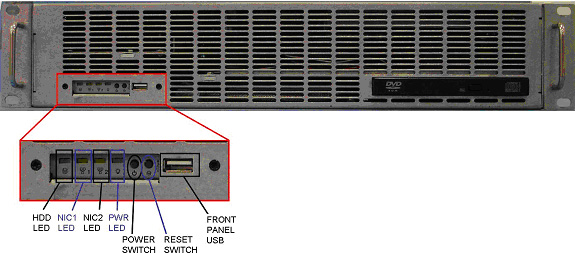
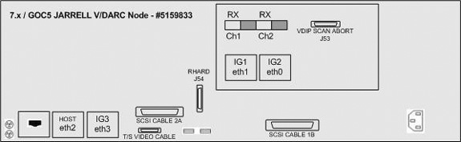
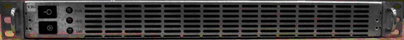
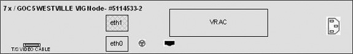

Operating Documentation
Direction 5193574-800, Rev# 22
LightSpeed 7.X Service Methods
Module Version 2.0, Version Date 4/1/08
Operating Documentation |
| Required Persons | Preliminary Reqs | Procedure | Finalization |
|---|---|---|---|
| 1 | Not Applicable | 35 mins | 20 mins |
This procedure describes the replacement of the GOC5 Operator Console VCT Image Generator (VIG) Node(s).
Verify that the VDARC Node is able to access a remote shell successfully.
Perform initialization of each VIG Node (repower sequence).
Perform {ctuser@hostname} vrac_flash_update
Perform diagnostics for the VIG Node VRAC(s).
Start up the application software and verify that image_generation is running for each VIG Node.
Halt the process, then repower the Operator Console and bring it up to Application software to make sure image_generation is running.
Perform a Recon Data Path test.
Perform sanity scans (e.g., scout, axial & helical)
| NOTE: | Whenever a Jarrell type VIG Node is used, it MUST be placed in the bottom standard slot 1 position. The Ethernet cable identifying the bottom IG #1 must be correctly connected between the V/DARC Node and the VIG Node. If two Jarrell VIG Nodes are present, the second Jarrell VIG Node must be placed in slot 2 (middle). |
| NOTE: | Jarrell VDARC and Jarrell IG Nodes require software release 06MW29.x or more recent. |
| Last Revised: | 21 March 2008 |
| Item | Qty | Effectivity | Part# | Manufacturer | |
|---|---|---|---|---|---|
| Medium Phillips Screwdriver | 1 | - | - | - | |
| Item | Qty | Effectivity | Part# | Manufacturer | |
|---|---|---|---|---|---|
| VIG Node (Westville) | - | 5114533-2 | Omni-Tech Corp - Dedicated Computing | ||
| VIG Node (Jarrell) | - | 5159834 | Omni-Tech Corp - Dedicated Computing | ||
| ||||
| All cable connector screw-locks must be finger-tightened, only. Do NOT use any tool to tighten cable screw-locks. | ||||
| ||||
| Follow ALL required safety and PPE procedures customary for your organization, when working on this product. | ||||
| Condition | Reference | Effectivity |
|---|---|---|
Jarrell VDARC and Jarrell IG Nodes require software release 06MW29.x or more recent. | - | - |
Understand the conventions used in this publication | - | |
Only trained service personnel should service the GE CT Scanner. | - | - |
Select one of the following methods to Power OFF the Operator Console:
If Applications are up, click on the [Shut Down] icon and select [Shutdown].
| ||||
| (For 06MW03.X Software) Wait 1-2 minutes after the “System halted” message appears, to allow the DARC Node to properly power-down. Future SW releases (e.g., 06MW29.x) have corrected this issue. | ||||
If Applications are down, open a Unix Shell at the Toolchest. Type:
{ctuser@hostname}: halt
The Operator Console monitor will display a 'System halted' message when it is acceptable to power OFF the Operator Console.
Power OFF the Operator Console at the front panel switch.
Remove the front and rear Operator Console covers.
Remove the rear Ethernet cable connection(s) to the specific VIG Node(s) being replaced. If more than one cable is being disconnected, verify each cable label is present and clearly marked; if necessary, add a label for clarity.
Remove the power cord at the rear panel of VIG Node(s).
Remove and retain the two (2) front mounting screws and slide out the VIG Node(s).
| NOTE: | Whenever a Jarrell type VIG Node is used, it MUST be placed in the bottom standard slot 1 position. The Ethernet cable identifying the bottom IG #1 must be correctly connected between the V/DARC Node and the VIG Node. If two Jarrell VIG Nodes are present, the second Jarrell VIG Node must be placed in slot 2 (middle). |
Slide the replacement VIG Node(s) into the Operator Console from the front. The bottom slot is the standard slot reserved for VIG Node #1. VIG Node #2 is positioned directly above VIG Node #1. VIG Node #3 is positioned directly above VIG Node #2.
Replace the two (2) front mounting screws on the front of the VIG Node(s).
Verify the power switch (if present) located at the rear of the VIG Node(s) is set to the ON position.
Replace the rear Ethernet cable(s) between the V/DARC and the VIG Node(s).
Illustration 1: “Jarrell” V/DARC Node #5159833
(Sheet 1 of 2

(Sheet 2 of 2

Illustration 2: “Westville” V/DARC Node #5114523-2
(Sheet 1 of 3

(Sheet 2 of 3

(Sheet 3 of 3

Illustration 3: “Jarrell” VIG Node #5159834
(Sheet 1 of 2

(Sheet 2 of 2

Illustration 4: “Westville” VIG Node #5114533-2
(Sheet 1 of 2

(Sheet 2 of 2

| NOTE: | To view the GOC5 Operator Console Schematic, please refer to 5115335SCH - GOC5 Interconnect. |
Power ON the Operator Console at the front panel switch.
At the V/DARC Node, verify the rear power switch is set to the ON position.
Visually verify the V/DARC Node front panel Power LED is illuminated. If not, press the front panel power switch (3-10 seconds) to apply power to the V/DARC Node.
Visually verify the VIG Node front panel Power LED(s) is illuminated. If not, press the front panel power switch (3-10 seconds) to apply power to the VIG Node.
At the Disk Array (JBOD) verify two green LEDs at rear panel are ON. If not, press two power switches at rear panel, to apply power to the Disk Array.
Stop Applications Software from auto-starting at the 5 second Pink Box.
The V/DARC Node must be up to check the VIG Node(s). Perform ping and rsh commands on the V/DARC Node, as follows:
At the Toolchest, with Application software down, open a Unix Shell.
Ping the V/DARC Node:
{ctuser@hostname} ping darc
Verify ping is successful.
Press <Ctrl+C> to stop ping process.
Remote Shell to the V/DARC Node:
{ctuser@hostname} rsh darc
Verify ctuser@darc prompt is present.
Exit from the V/DARC Node Remote Shell:
{ctuser@darc} exit
| NOTE: | The Unix Shell will be used again, so do not exit or close at this time. |
In some configurations, the GOC5 Operator Console may have up to three (3) VIG Nodes. In the instructions below, be certain to specify ig1, ig2 or ig3, as appropriate for the VIG Node being tested.
| NOTE: | Application Software must be down. |
Power OFF the replaced or repositioned VIG Node at the front panel switch.
Illustration 5: Westville VIG Node Front Panel
Illustration 6: Jarrell VIG Node Front Panel
Power ON the replaced or repositioned VIG Node at the front panel switch (3-10 seconds).
Wait two to four minutes for the VIG Node boot up.
| NOTE: | Whenever a VIG Node is swapped (physical location or on end of the Ethernet cable), the affected VIG Node requires a manual power cycle at the front panel. This manual power cycle is required for the VIG Node to get an IP address. |
In the Unix Shell, verify the cat /usr/g/config/INFO file for number of VIGs active in the Operator Console:
| NOTE: | If the number of VIG Nodes present is incorrect, then perform the reconfig process as root on the Host with application Software down. |
{ctuser@hostname} cat usr/g/config/INFO
In the Unix Shell, verify the following IG Node(s) as applicable:
| NOTE: | For communication problems, refer to ethtool T/S Note. |
{ctuser@hostname} rsh darc
{ctuser@darc} exit
{ctuser@hostname} vrac_flash_update
answer: y
| NOTE: | If vrac_flash_update fails, try the process again. If it still fails verify the V/DARC and VIG Nodes can successfully perform the remote shell commands. |
{ctuser@hostname} rsh darc
{ctuser@darc} su -
Password: #<password>
[root@darc] rsh ig1
[root@ig1] vrac_menu -a
Verify diagnostics pass.
[root@ig1] exit
[root@darc] rsh ig2
[root@ig2] vrac_menu -a
Verify diagnostics pass.
[root@ig2] exit
[root@darc] rsh ig3
[root@ig3] vrac_menu -a
Verify diagnostics pass.
[root@ig3] exit
[root@darc] exit
{ctuser@darc} exit
{ctuser@hostname}
In the Unix Shell, start Application software:
{ctuser@hostname}st
When Application software is up, open a Unix Shell to check image_generation for each VIG Node present and configured in the console:
{ctuser@ig#} or [root@ig#]ps -leaf|grep -v grep|grep image_generation
4 S ctuser 767 766 0 81 0 - 1143rt_sig 14:52? 00:00:00csh -c image_generation -bp
0 -host darc -node 1 -vrac 0
0 S ctuser 785 767 0 75 0 - 48692- 14:52? 00:00:00 image_generation -bp 0 -ho st
darc-node 1 -vrac 0
Verify two lines are returned for each VIG Node.
Exit out of each VIG Node:
{ctuser@ig#} or [root@ig#] exit
After a VIG Node is replaced or repositioned (cables swapped) the VIG Node must be powered off and then on again so it can initialize. To check if the initialization worked properly, halt the Console. If the VIG Node does not come up properly under VDARC control, perform the initialization process again.
In the Unix Shell, shutdown Application software:
{ctuser@hostname}: cleanMon
Once Applications are down, open a Unix Shell at the Toolchest:
{ctuser@hostname}: halt
The Operator Console monitor displays System halted when it is acceptable to power OFF the Operator Console.
Power OFF the Operator Console at the front panel switch.
Wait 30 seconds to 1 minute for drives to settle.
Power ON the Operator Console at the front panel switch.
In the Unix Shell, start Application software:
{ctuser@hostname} st
When Application software is up, open a Unix Shell to check image_generation for each VIG Node present and configured in the console:
{ctuser@ig#} or [root@ig#]ps -leaf|grep -v grep|grep image_generation
4 S ctuser 767 766 0 81 0 - 1143rt_sig 14:52? 00:00:00csh -c image_generation -bp
0 -host vdarc -node 1 -vrac 0
0 S ctuser 785 767 0 75 0 - 48692- 14:52? 00:00:00 image_generation -bp 0 -ho st
vdarc -node 1 -vrac 0
Verify two lines are returned for each VIG Node.
Exit out of each VIG Node:
{ctuser@ig#} or[root@ig#] exit
Close the Unix Shell.
Select the Service Icon.
Select [DIAGNOSTICS].
Select [Recon Data Path].
Select [1] and [ALL]
Select [RUN]
Verify Recon Data Path tests pass.
Select [Dismiss].
Perform sanity scans (e.g., scout, axial and helical).
Verify the image(s) reconstruct and are properly displayed.
Install the front and rear Operator Console covers.